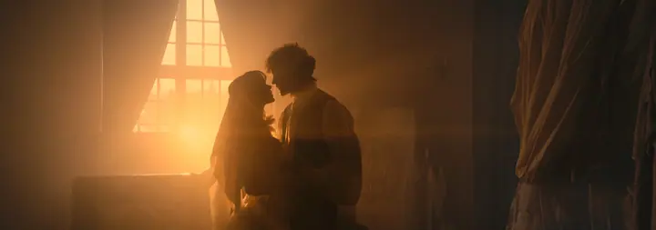
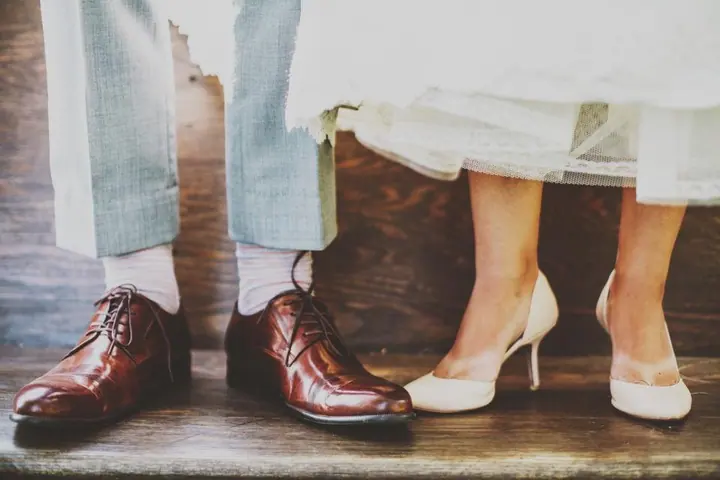

Svatby a elopement
Fotím svatby, elopement a malé obřady v Praze i na místech po celé Evropě. Jde mi o nedokonalé, spontánní a intimní chvíle, ve filmovém a dokumentárním stylu.

Jmenuji se Braulio Lara, jsem fotograf z Chile a žiju v Praze. Fotím svatby, elopement a páry v náladovém, filmovém stylu a hledám krásu v nedokonalosti.
Rezervovat termínKdyž mě něco chytne, dávám se tomu celý a s vášní. Do fotografie vkládám všechny smysly a snažím se vidět věci trochu jinak. Přitahuje mě symetrie, propojení mezi lidmi a vyprávění příběhů.


Miluju kino a filmy, a proto jsem vymyslel photofilm: krátký film o vás, který vzniká stejně jako moje focení, jen v pohybu. Představte si vlastní příběh ve filmu s osobitou atmosférou. Nemusíte být herci, stačí se mít rádi a věřit procesu.
Jsem společenský a rád poznávám nové lidi. Fotím v Praze, v Bratislavě i na svatbách v zahraničí a pokaždé se snažím, aby fotky odpovídaly povaze konkrétního páru. Pojďme spolu vytvořit něco, co bude mít smysl.
Co dělám
Fotím svatby, elopement a malé obřady v Praze i na místech po celé Evropě. Jde mi o nedokonalé, spontánní a intimní chvíle, ve filmovém a dokumentárním stylu.
Filmové focení pro páry v historickém centru Prahy, u kanálů, na starých schodištích nebo doma. Hodí se i jako zásnubní focení.
Photofilm je můj vlastní koncept: krátký film, který vzniká stejně jako fotky, jen v pohybu. Nemusíte umět hrát, stačí se mít rádi a věřit procesu.
Pro kolegy fotografy nabízím vzdělávání a vlastní presety, se kterými dosáhnete mé teplé, náladové barevnosti.
Postup
Napíšete mi termín a pár slov o sobě. Potom se potkáme nebo zavoláme a probereme, jaký příběh chcete vyprávět.
Pomůžu vám vybrat místo v Praze i jinde a poradím s oblečením. U elopementu vysvětlím rozdíl mezi právně platným a symbolickým obřadem.
Nemusíte pózovat ani hrát. Nechávám prostor spontánním chvílím a hledám světlo, rámy a detaily, kterých si ani nevšimnete.
Vybrané fotky upravím v mém teplém, filmovém stylu. Pokud chcete i photofilm, dostanete váš příběh navíc v pohybu.
Otázky
Je to krátký film o vás, který vzniká stejně jako moje focení, jen v pohybu. Nemusíte umět hrát, stačí se mít rádi a věřit procesu.
Nejdřív je dobré rozhodnout, jestli chcete právně platný, nebo symbolický obřad. Rád vám s tím i s výběrem místa pomůžu, na blogu mám několik tipů na místa v Praze.
Ano. Žiju v Praze, ale fotím i v Bratislavě a na svatbách v dalších zemích Evropy.
Na blogu mám článek o tom, co si vzít na focení v Praze. Před focením to spolu probereme, aby oblečení sedělo k místu i k vám.